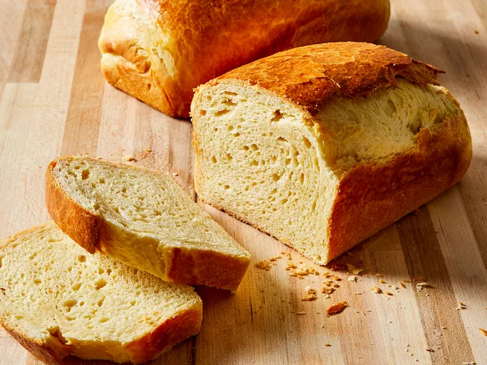

Brioche

This brioche recipe can be served with jelly or other preserves to accompany tea or coffee with paté or hors d'oeuvres. The tops of the small rolls can easily be pulled away, giving space for a sweet or savory filling. Brioche dough can also be used for wrapping other ingredients such as beef for boeuf-en-croûte, salmon filling for a koulibiaca, or spicy garlic sausage.
Ingredients
- 1 tablespoon active dry yeast
- ⅓ cup warm water (110 degrees F)
- 3 ½ cups all-purpose flour
- 1 tablespoon white sugar
- 1 teaspoon salt
- 4 large eggs
- 1 cup butter, softened
- ½ teaspoon vegetable oil, or as needed
Egg Wash:
- 1 large egg yolk
- 1 teaspoon cold water
Cooking Directions
- Gather the ingredients.
- Dissolve yeast in warm water in a small bowl. Let stand until creamy, about 10 minutes.
- Stir together flour, sugar, and salt in a large bowl. Make a well in the center, then add eggs and yeast mixture; beat well until dough comes together. (Tip: Add 1 to 3 tablespoons of additional warm water, 1 tablespoon at a time, only if needed to help the dough come together.)
- Turn dough out onto a lightly floured surface and knead until smooth and supple, about 8 minutes.
- Flatten dough and spread it with 1/3 of the butter.
- Knead butter into dough.
- Repeat this step twice to incorporate remaining butter, allowing dough to rest for a few minutes between additions of butter, about 20 minutes total.
- Lightly grease a large bowl with vegetable oil, place dough in the bowl, and turn to coat. Cover with plastic wrap and let rise in a warm place until doubled in volume, about 1 hour.
- Punch down dough, cover with plastic wrap, and refrigerate for 6 hours to overnight.
- Preheat the oven to 400 degrees F (200 degrees C). Lightly grease two 8x4-inch loaf pans.
- Turn dough out onto a lightly floured surface. Divide dough into 2 equal pieces, form into loaves, and place into the prepared loaf pans.
- Cover with greased plastic wrap and let rise until doubled in volume, about 1 hour.
- Make egg wash: Beat egg yolk and cold water in a small bowl. Brush on the tops of loaves.
- Bake loaves in the preheated oven until the tops are deep golden brown, about 25 minutes. Cool in the pans for 10 minutes before transferring to wire racks to cool completely.
Home